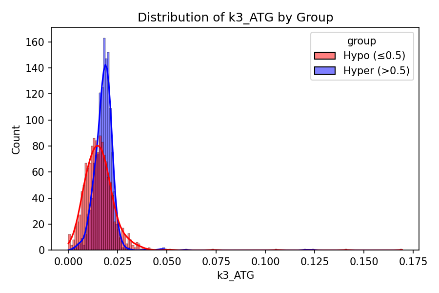
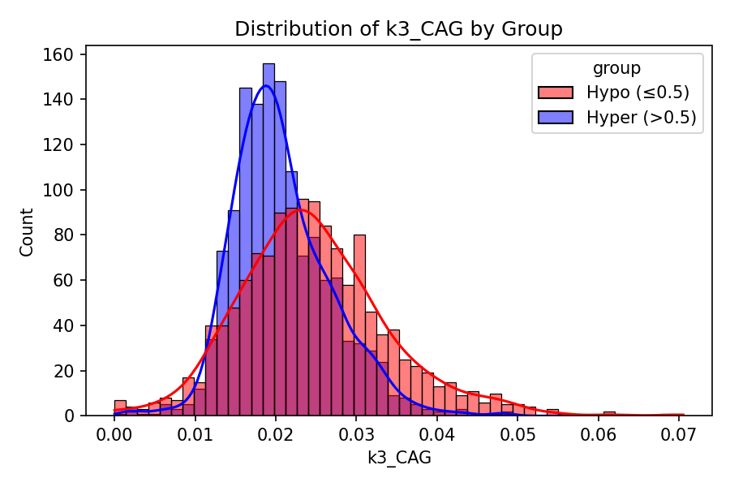
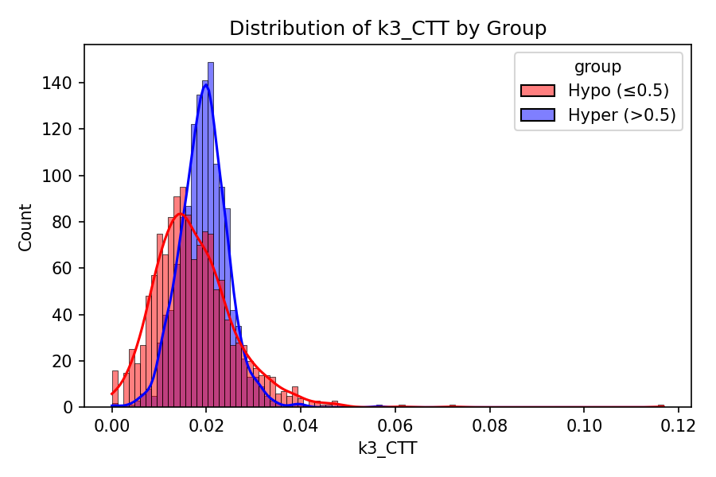
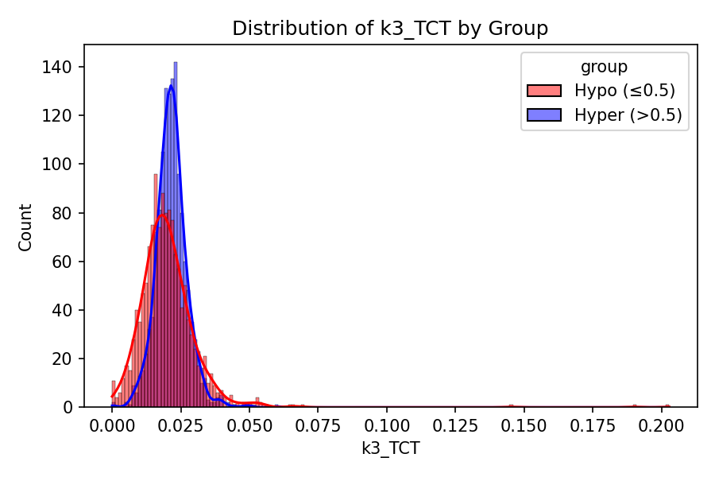
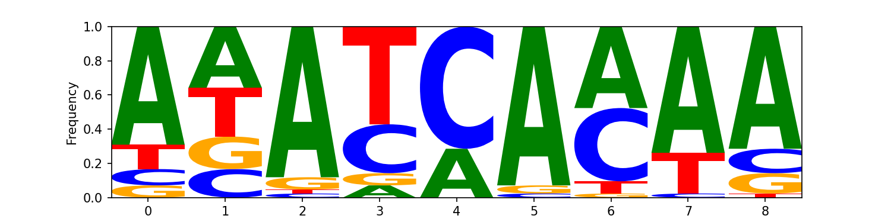

This report presents a comprehensive overview of our analysis pipeline, including data and feature exploration, regression and classification modeling for methylation prediction, integrated gradients-based explainability, and motif discovery (both general and kernel-specific).
Data and Feature Exploration
This section provides insights into the relationships between features and methylation score, including correlation heatmaps and feature distributions. We also show stratified views by hypermethylated (>0.5) and hypomethylated (≤0.5) groups.
Feature Correlation Heatmap by Groups
Feature Distributions by Group
These histograms show how features differ between hypermethylated (score >0.5) and hypomethylated (≤0.5) groups.
start
end
score
seq_length

gc_content
cpg_density

k2_AA
k2_AC
k2_AG
k2_AT
k2_CA
k2_CC
k2_CG
k2_CT
k2_GA
k2_GC
k2_GG
k2_GT
k2_TA
k2_TC
k2_TG
k2_TT
k3_AAA
k3_AAC
k3_AAG
k3_AAT
k3_ACA
k3_ACC
k3_ACG
k3_ACT
k3_AGA
k3_AGC

k3_AGG
k3_AGT
k3_ATA
k3_ATC
k3_ATG
k3_ATT
k3_CAA
k3_CAC
k3_CAG
k3_CAT
k3_CCA
k3_CCC
k3_CCG
k3_CCT

k3_CGA
k3_CGC
k3_CGG
k3_CGT
k3_CTA
k3_CTC
k3_CTG
k3_CTT
k3_GAA
k3_GAC
k3_GAG
k3_GAT
k3_GCA
k3_GCC
k3_GCG
k3_GCT
k3_GGA
k3_GGC
k3_GGG
k3_GGT
k3_GTA
k3_GTC
k3_GTG
k3_GTT
k3_TAA
k3_TAC
k3_TAG
k3_TAT
k3_TCA
k3_TCC
k3_TCG
k3_TCT
k3_TGA
k3_TGC
k3_TGG

k3_TGT
k3_TTA
k3_TTC
k3_TTG
k3_TTT
Regression Performance
The table below presents performance metrics for regression models predicting continuous methylation levels. Following the table are plots illustrating regression model predictions and score distributions.
| Model | MSE | R² | Pearson Corr |
|---|---|---|---|
| CNN_Model | 0.0773 | 0.5694 | 0.7598 |
Regression Plots
Distribution of Test Methylation Scores

CNN Predictions vs Actual Methylation Scores

Interactive Version
Classification Performance
The table below presents performance metrics for classification models predicting whether samples exceed a given methylation score threshold. Following the table are ROC curves and distribution plots.
| Model | AUC | Accuracy | F1 | Precision | Recall |
|---|---|---|---|---|---|
| Logistic Regression | 0.9368 | 0.8606 | 0.8598 | 0.8949 | 0.8273 |
| Random Forest | 0.9224 | 0.8569 | 0.8618 | 0.8602 | 0.8633 |
| MLP | 0.4945 | 0.4888 | 0.4841 | 0.5059 | 0.4640 |
| Ensemble | 0.9030 | 0.8494 | 0.8514 | 0.8689 | 0.8345 |
Classification Plots
Distribution of Class Labels
Logistic Regression ROC Curve
Random Forest ROC Curve
MLP ROC Curve
Ensemble ROC Curve
Motif Discovery by Kernel Size
Below are motif logos discovered for each kernel size used in the model. These motifs may highlight sequence patterns relevant to the convolutional filters.
Kernel_5
Cluster 0
Cluster 1
Cluster 2
Cluster 3
Cluster 4
Cluster 5
Cluster 6
Cluster 7
Cluster 8
Cluster 9
Kernel_9
Cluster 0
Cluster 1
Cluster 2
Cluster 3
Cluster 4
Cluster 5
Cluster 6
Cluster 7
Cluster 8
Cluster 9
Conclusions
In summary, our Random Forest approach often provides robust performance on classification tasks, while the CNN-based regressor shows promising results in predicting continuous methylation scores. Integrated Gradients analysis provides insights into which nucleotide positions the model relies on, guiding potential feature engineering and improvements. Motif discovery (both general and kernel-specific) highlights enriched sequence patterns that may be biologically relevant. Further exploration and validation of these motifs could uncover important regulatory mechanisms.